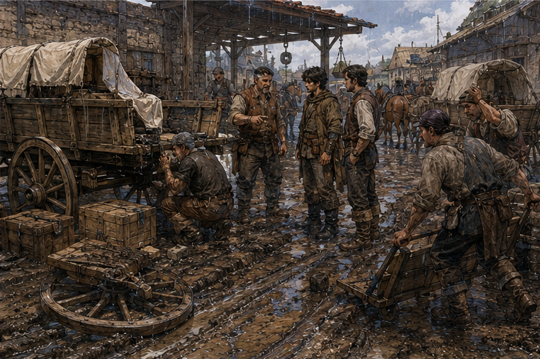
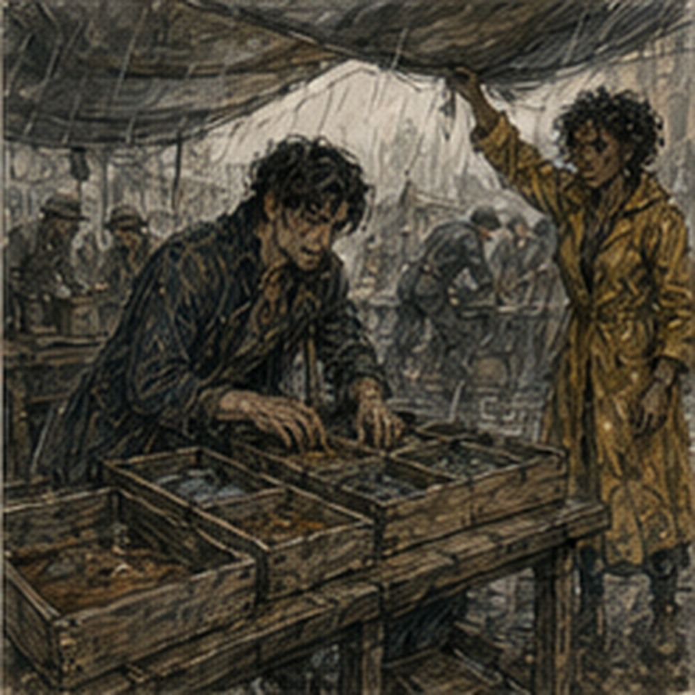

Pell did not get the rocks. This was because someone else wanted me first. The knock came before breakfast. Not urgent knocking. Three times. Pause. Two. Professional. I opened the door. A boy in a brown coat held a folded note and looked annoyed that I had required stairs.
“Greg?”
“Yes.”
“Vale.”
He handed me the note. No seal.
ANTONIUS.
WEST GATE FREIGHT YARD.
ASK FOR RUSK.
ONE HOUR IF YOU CAN.
LOOK FIRST. DO NOT PROMISE ANYONE ANYTHING.
Under that:
PAID.
Important.
“How much?”
The boy blinked.
“What?”
“Paid how much?”
“I don’t know.”
“Bad messenger.”
“I carry paper.”
“Good messenger.”
He left. I looked at the note again. One hour. If you can. Look first. Do not promise. Paid. That was almost a complete specification. I ate before going. Hessa would have been unbearable if she knew how much influence she had acquired over breakfast. The twenty pounds of shale remained behind the lodging desk. The keeper saw me look at it.
“Still one copper tomorrow.”
“I know.”
“You could throw it away.”
“No.”
“Then it owns you.”
I disliked her. The west gate freight yard was not the west storehouse. I knew this because I went to the west storehouse first. Useful distinction. Jalen was outside rolling a barrel with another worker.
“Rusk?”
“Gate yard.”
“I know that now.”
“You look like you didn’t.”
Hostile. I walked another six minutes. The freight yard occupied a broad packed-earth square inside the west wall where carts could be weighed, split, reloaded, inspected, delayed, taxed, cursed, and occasionally repaired.

Today it was mostly cursed. Rain had made the center soft. Not mud everywhere. Worse. Mud in specific places. Deep wheel ruts cut through the traffic lane. Three loaded carts waited along the wall. A fourth sat crooked near the weighing platform with its left rear wheel removed. Crates occupied the ground beside it under two canvas sheets. A teamster shouted at a yard clerk.
A yard clerk shouted at no one. Two laborers carried sacks around both. A woman with a blue headcloth stood under the weighing roof with a ledger and looked like she wanted the entire city replaced. Rusk saw me.
“There.”
He came fast. Not running.
“Vale sent you?”
“Yes.”
“Good.”
“What’s broken?”
“Cart.”
I looked.
“Then wheelwright.”
“Already here.”
A man under the cart raised one hand without emerging.
“Road?”
“Bad.”
“Yard?”
“Also bad.”
“Cargo?”
“Some.”
“Customer?”
“Three.”
There. Not one problem.
“What does Antonius want?”
Rusk handed me another note. Shorter.
FIND WHICH DELAY COSTS US FIRST.
TELL RUSK.
RUSK DECIDES.
I read it twice. That was new. Not solve. Not report everything. Find which delay costs first. Narrow. Useful.
“What cargo?”
Rusk pointed.
“Cart is Mera Freight. Twelve crates lamp fittings, eight sacks bluegrain, four cases bottled dye.”
“Three customers?”
“Yes.”
“Same cart?”
“Yes.”
“Why?”
“Shared west road.”
“Destination here?”
“Lamp fittings to Sellen Chandlery. Grain to our West Storehouse. Dye to Havi Cloth.”
“Damage?”
“One dye case wet. Two grain sacks wet outside. Lamp crates look dry.”
“Wheel?”
“Hub split coming through gate.”
“Can cart move?”
“No.”
“Can cargo move?”
“Yes.”
“Then why is it still here?”
Rusk’s mouth tightened. Good question. Not because people were stupid. Because interface.
“Yard won’t release partial load until weight discrepancy is cleared.”
“Why discrepancy?”
“Cart came in light.”
“How light?”
“Thirty-two pounds against road weigh.”
“Cargo missing?”
“Driver says no.”
“Road scale accurate?”
“Driver says yes.”
“Yard scale?”
The woman in blue headcloth shouted from twenty feet away.
“Yes.”
I liked her.
“Who are you?”
“Lessa.”
“Yard?”
“Yes.”
“Is your scale accurate?”
“Yes.”
“When checked?”
“This morning.”
“Road weigh when?”
Rusk said, “Yesterday before rain.” Water should make cargo heavier, not lighter. Interesting. Could be scale difference. Could be missing cargo. Could be declared packaging. Could be wheel parts. The wheel was off.
“How much does the wheel weigh?”
The wheelwright’s voice came from under the cart.
“More than thirty-two.”
Right. Was road weight whole cart. Current yard weight with wheel removed? I looked at Lessa. She looked back.
“No.”
Good.
“We weighed before he took it off.”
Fine.
“What exactly is blocked?”
Lessa came over with her ledger.
“Manifest says gross load three thousand one hundred twelve. Gate scale read three thousand eighty.”
“Gross includes cart?”
“Yes.”
“Driver?”
A man near the team came over. Wet hat. Gray beard.
“Perrin.”
“Did anything leave the cart between road weigh and here?”
“No.”
“Anything join it?”
“Rain.”
“Did you lose a board?”
He frowned.
“What?”
“Cart body.”
“No.”
“Tool?”
“No.”
“Spare?”
He looked toward the broken wheel. Then back.
“Maybe.”
“What?”
“Spare iron rim section.”
Rusk said, “Maybe?” Perrin pointed under the rear bed.
“Strapped there. Was.”
“Where now?”
“Not there.”
“How heavy?”
Wheelwright again.
“Twenty, twenty-five.”
Closer.
“Anything else?”
Perrin thought.
“Jack block.”
“Weight?”
“Eight.”
There. Maybe. Not proof.
“Lost on road?”
“Could be.”
Lessa wrote.
“Still discrepancy.”
“Yes.”
“But cargo count can be right.”
“Yes.”
She looked less murderous. Not solved. Different problem.
“Can you release partial if discrepancy is explained as cart equipment?”
“If I can document likely noncargo loss and recount cargo.”
“Who recounts?”
“Yard.”
“Do it.”
She stared at me. Right. Not my authority. I looked at Rusk.
“First recommendation: recount. If cargo count matches, document missing cart equipment as probable weight difference and release the load.”
Rusk looked at Lessa.
“Can you?”
“Yes.”
“Do it.”
She moved immediately. Good. I had not invented anything. I had asked the wheelwright how much iron weighed. Useful at interface. Rusk said, “That’s it?”
“No.”
Three customers. Which delay costs first.
“What happens if all cargo sits one hour?”
“Dye customer is already shouting.”
“Cost, not volume.”
“Grain is ours.”
“Wet?”
“Two sacks outside.”
“Bluegrain damaged by water?”
“Eventually.”
“How eventually?”
Rusk shrugged.
“Mevi knows.”
Good.
“Lamp fittings?”
“Chandlery has installers waiting.”
“How much does waiting cost Antonius?”
“Contract penalty after midday.”
“What time?”
Rusk looked at the yard clock. Less than two hours. There.
“Dye?”
“Customer owns it already. We owe delivery, not condition beyond carriage terms.”
“Wet case?”
“Could become our argument.”
“Penalty time?”
“No fixed.”
“Grain?”
“Our inventory.”
“So lamp fittings have a clock.”
“Yes.”
“Why are they not first?”
“Because dye woman is shouting.”
Excellent.
“Then lamp fittings first unless recount finds missing cargo.”
Rusk nodded once. No surprise. Maybe he already suspected.
“Check the dye.”
“What?”
“Vale said one hour.”
“I have forty minutes.”
“Check it.”
Rusk walked away before I agreed. Narrow discretion had edges. Apparently the edges moved. I went to the canvas. Four wooden dye cases. One dark with rain along a corner. A woman in a yellow coat stood beside them. Not blue headcloth. Different woman.
“Havi Cloth?”
“Manager.”
“Name?”
“Rella.”
Existing Rella. Fine.
“Greg.”
“I know.”
Of course. She pointed at the wet case.
“That is ours.”
“Yes.”
“It was under their canvas.”
“Yes.”
“It is wet.”
“Yes.”
She waited. I had no idea what she wanted from me.
“Do you want me to say it is wet?”
“I want someone to open it.”
“Why haven’t you?”
“Yard seal.”
Interface again.
“Lessa?”
“Counting.”
“Rusk?”
“Lamp people.”
“Then wait.”
She did not like that. Neither would I.
“What is inside?”
“Bottled indigo concentrate.”
“Glass?”
“Yes.”
“Packing?”
“Straw and ash.”
“Ash?”
“Dry ash. Keeps bottles from knocking.”
“Water getting inside matters?”
“Yes.”
“Because?”
“Labels. Corks. If ash cakes, bottles shift.”
She knew her product. Good.
“Can you tell if water crossed the case?”
“Not sealed.”
“Can you smell dye?”
She stared. Then leaned. So did I. Wet wood. Mud. Horse. No indigo I recognized. She said, “No.”
“Does that mean anything?”
“Bottle break usually smells.”
Good.
“Then current problem is wet case, not known broken dye.”
“Yes.”
She still wanted it opened. Reasonable. I found Lessa. She was counting lamp crates with another clerk.
“Twelve,” she said.
“Manifest twelve.”
“Good.”
“Do not interrupt.”
“I need seal release on dye when you finish.”
“Then wait.”
Good. I waited. Physical waiting. No system. Rainwater dripped from the weighing roof. Perrin held one horse while a laborer checked harness leather. The wheelwright emerged from under the cart with black mud on both elbows. He was younger than his voice. Maybe thirty.
“Hub’s gone.”
“How long?”
“New wheel.”
“Here?”
“No.”
“So cart stays.”
“Yes.”
“Cargo leaves.”
“Should.”
Good. His work had nothing to do with mine now. I left him alone. Lessa counted grain. Eight. Dye. Four. All cargo present. She wrote a note against the discrepancy.
“Probable lost cart iron and jack block. Driver statement. Wheelwright estimate.”
Perrin signed. Lessa signed. Rusk signed. Cargo released. That took six minutes. Then everyone tried to move everything at once. Of course. Two laborers reached for lamp crates. Rella called for dye. Rusk called for grain. A handcart came through the lane from the wrong side.
Perrin tried to move his horses away from the broken cart. The weighing platform exit narrowed to about eight feet because one wheel rut had collapsed. There. New interface. Not expertise. Traffic.
“Stop.”

Nobody did. I said it louder.
“STOP.”
Several people looked. Rusk did. Good enough.
“Lamp first.”
Rella said, “My case is wet.”
“Lamp has penalty clock.”
“That is not my problem.”
“No. Your problem gets worse if your cases get knocked over while everyone uses one lane.”
She looked at the lane. Then at the cases. Accepted. Rusk said, “Lamp first. Grain second. Dye after inspection.” His decision. People moved. Better. Not perfect. The first handcart took three lamp crates. The rut caught one wheel. Crate tilted. I moved. Too far. A laborer caught it. No magic. Good. They reset. Second attempt used two planks over the rut. Whose idea?
Wheelwright. Good. He had seen the problem. Of course. Lamp fittings began moving toward a smaller delivery cart. I watched the transfer. Not because I owned it. Because Antonius had asked which delay cost first. The answer remained lamp.
A man from Sellen Chandlery arrived halfway through and started counting. Competent. No need. I checked time. Still safe. Rusk came beside me.
“Dye.”
We opened the wet case with Lessa and Rella present. Seal recorded. Nails lifted. Lid off. Straw. Ash. Dry in center. Wet only at outer corner. Twelve bottles. No break. Labels on three bottles damp at edges. Rella swore.
“Can they be relabeled?”
“Yes.”
“Product?”
“Probably fine.”
“Probably?”
She lifted one. Checked cork. Another. Third.
“Fine unless water sat under the wax.”
“Can you check?”
“At shop.”
“Then?”
“I want the case repacked dry.”
Rusk said, “We can do that.” She looked at him.
“Today.”
“Yes.”
Done. No Greg. Good. Grain next. Mevi had arrived. I did not know who sent for her. Probably Rusk. She pressed the wet outer sack with two fingers.
“Surface.”
“Both?”
She checked second.
“Second seam took water.”
“Transfer?”
“Yes.”
“How fast?”
“Before storage.”
Rusk nodded. Again. Owned. The lamp crates left first. No penalty. Dye repacked. Grain transferred. Broken cart remained broken. Perrin remained unhappy. The yard remained muddy. Nothing became elegant. Rusk found me near the gate.
“How long?”
I checked.
“Fifty-two minutes.”
“Vale paid an hour.”
“Do I owe eight minutes?”
“No.”
“Can I use them?”
“For what?”
“Questions.”
“No.”
I laughed. He handed me two copper. I looked.
“That’s the hour?”
“Yes.”
“Antonius values me at two copper an hour?”
“For this.”
Important.
“For what exactly?”
Rusk considered.
“Sorting noise.”
I did not like the phrase. I liked the function.
“What would you have done?”
“Lamp first.”
“Then why call me?”
“I was dealing with the cart, yard release, customer, and wet grain.”
“You already knew lamp had penalty.”
“Yes.”
“Then?”
He looked at me as if I was being deliberately stupid.
“Vale said use you.”
That was not enough. I waited. Rusk sighed.
“I knew the pieces. Didn’t have time to put them in order.”
There. Interface. Not superior knowledge. Bandwidth.
“What if I’d been wrong?”
“I decide.”
Exactly. I put the two copper away.
“Good.”
Rusk looked suspicious.
“What?”
“Nothing.”
“Go.”
I went. At the gate, someone called my name. Antonius. He stood under the arch with a folded umbrella and no visible reason to be there.
“Were you watching?”
“No.”
“Then why are you here?”
“Other business.”
Of course. He looked toward the freight yard.
“Rusk?”
“Still owns it.”
“Good.”
“Lamp fittings first.”
“I know.”
“How?”
“Rusk sent a runner.”
Faster network than Greg. Good.
“Why me?”
Antonius looked at me.
“Because last time you found the drain.”
“That was different.”
“Yes.”
“Then why?”
“Because you separate expensive from loud.”
I stopped. That was accurate enough to be uncomfortable.
“Rella was loud.”
“Who?”
“Dye manager.”
“I don’t know her.”
Good.
“Lamp penalty was expensive.”
“Yes.”
“You knew that before calling me?”
“No. Rusk did.”
“Then Rusk could separate it.”
“Rusk was busy.”
Same answer. Antonius continued.
“I did not need a freight master. I needed someone who could ask five people what they knew and tell Rusk which answer mattered first.”
There. Requested. Narrow. Paid. Not command. I liked it too much. Danger.
“How often?”
Antonius smiled slightly.
“No.”
“I asked one question.”
“You asked for a job category.”
“I did not.”
“You did.”
Maybe.
“What do you call it?”
“I don’t.”
“Then how do you request it?”
“I sent your name.”
Annoying.
“Two copper is low.”
“You worked fifty-two minutes.”
“High, then.”
“Yes.”
I hated him.
“Debt?”
“Separate.”
That surprised me.
“You are not taking it?”
“No.”
“Why?”
“You were hired for a task. I paid for the task.”
“Even though I owe you?”
“Yes.”
“Bad lender.”
“No.”
He started toward the city. I followed for six steps before realizing I was following.
“Where are you going?”
“Lunch.”
“With?”
“Not you.”
Hostile. I stopped. He continued. Then turned.
“Tomorrow morning. West Storehouse.”
“For?”
“Debt work.”
There. Different relationship.
“Paid?”
“Debt.”
“Fine.”
He left. The world had categories even when I wanted to merge them. Good. I stood under the gate arch with two copper in my pocket. Could go to Bale. Master available today. Could go to Kett. Could go to Varo. Could take the twenty pounds of shale to Pell. Could find food. The freight yard behind me shouted again. Different cart.
Different problem. Not mine. I went home first. The lodging keeper was behind the desk. I put one copper down. She looked at it.
“For?”
“Rocks.”
She took it. Terrible.
“Can I leave them another day?”
“Yes.”
“Good.”
I had earned two copper and immediately spent one on not carrying rocks. Progress. Upstairs, I opened the notebook.
DORRIN.
BALE.
KETT.
VARO.
Then below it:
VALE / RUSK
requested: identify first costly delay authority: recommendation only decision owner: Rusk result: lamp delivery first, no penalty I stared at the words. Requested. That mattered. Too much. I crossed it out. Then wrote it again. Not because it was important. Because it was accurate. I had not wandered into the freight yard. I had not made myself useful until someone tolerated me.
Antonius had sent for me. For a specific thing. Because he expected I could probably do it again. My chest did something irritating. Pride. Probably. I knew pride. Old friend. Dangerous employee. I closed the notebook. Sinkstone could wait until after lunch. Maybe until tomorrow. No. Bale’s master was available today. Useful lead. Actual timing. I stood. Then my stomach made a louder argument.
Expensive versus loud. I laughed. Food first. Bale after. Probably.